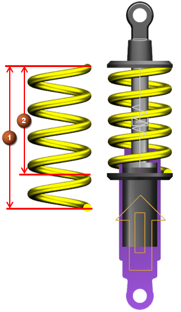

对于平移弹簧，自由长度为弹簧不受拉力或压力时的自由长度。对于扭矩弹簧，自由角度为弹簧不受力或扭矩作用时双臂间的角度。您可以在弹簧处于自由状态时对其施加预载，以将它压缩或者伸长。
安装长度为弹簧在仿真起始时的角度，此时弹簧可能处于压缩或伸长状态。
当您使用连杆附着时，弹簧的安装长度由操作连杆原点和基本连杆原点来定义，并随几何体更新，这个值不显示在弹簧对话框中。
当您使用滑动副附着时，您必须在安装长度输入框中显式指定安装长度。
在大多数情况下，如果您知道弹簧的预载大小，那么您就可以在预载输入框中键入值来定义预载。
如果您知道弹簧的安装用途，您就可以选择性地输入预载大小与预载长度或预载角度，以调整弹簧的预载。
|
注释 |
在滑动副上定义弹簧时，预载长度等于安装长度，除非您指定不同的预载长度。 |
|

|
当您更改预载、预载长度/预载角度或者刚度值时，软件将自动更新弹簧对话框中的自由长度/自由角度值。
要显式定义弹簧的自由长度或自由角度，在预载输入框中输入0，在预载长度输入框中键入弹簧的自由长度，或者在预载角度输入框中输入弹簧的自由角度。